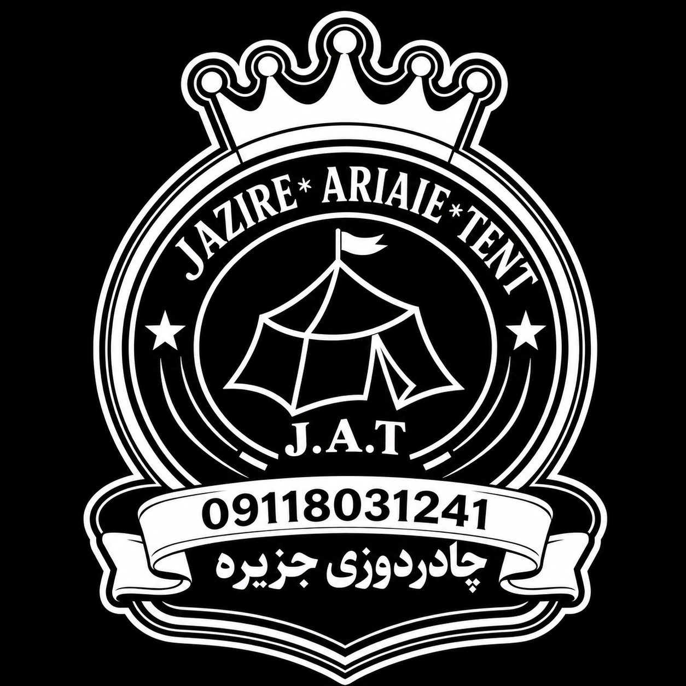

تعمیر چادر
تعمیر چادر مسافرتی؛ راهنمای کامل تشخیص آسیب و ترمیم اصولی
پارگی پارچه، خرابی زیپ، نفوذ آب و آسیب اسکلت از مشکلات رایج چادر هستند.
مطالعه مقاله
چادردوزی جزیرهراهنمای تخصصی خرید، استفاده، تعمیر و نگهداری چادرهای مسافرتی و تجهیزات کمپینگ
پارگی پارچه، خرابی زیپ، نفوذ آب و آسیب اسکلت از مشکلات رایج چادر هستند.
مطالعه مقالهخم شدن یا شکستن فنر میتواند عملکرد چادر را مختل کند.
مطالعه مقالهظرفیت، وزن، جنس پارچه و مقاومت در برابر باران را بررسی کنید.
مطالعه راهنماخشک کردن، تمیزکاری و انبار صحیح عمر چادر را افزایش میدهد.
مطالعه مقالهروش تشخیص پارگی، ترمیم پارچه و جلوگیری از گسترش آسیب.
مطالعه مقالهگیر کردن زیپ، خرابی سرزیپ و مشکلات دندانهها را بررسی کنید.
مطالعه مقالهروش پیدا کردن محل نفوذ آب و افزایش مقاومت چادر در برابر باران.
مطالعه مقالهجمع کردن صحیح باعث افزایش عمر پارچه، فنر و زیپ چادر میشود.
مطالعه مقالهویژگیهای مهم چادر برای مناطق مرطوب و بارانی شمال ایران.
مطالعه مقالهبررسی هزینه، امکان تعمیر و زمان مناسب برای بازسازی چادر.
مطالعه مقالهاگر چادر شما دچار پارگی، خرابی زیپ، شکستگی فنر یا آسیب اسکلت شده است، قبل از خرید چادر جدید با چادردوزی جزیره J.A.T تماس بگیرید.
درخواست تعمیر و مشاورهاگر پارچه، زیپ، فنر یا بخشهای اصلی چادر قابل تعمیر باشند، بازسازی میتواند هزینه کمتری نسبت به خرید چادر جدید داشته باشد.
خرابی درزها، پارگی پارچه، آسیب زیپ یا فرسودگی پوشش ضدآب میتواند باعث نفوذ آب شود.
خشک کردن کامل بعد از سفر، تمیز کردن، نگهداری در محیط خشک و بررسی دورهای باعث افزایش عمر چادر میشود.
بله. تعمیر زودهنگام از بزرگتر شدن پارگی و افزایش هزینه جلوگیری میکند.